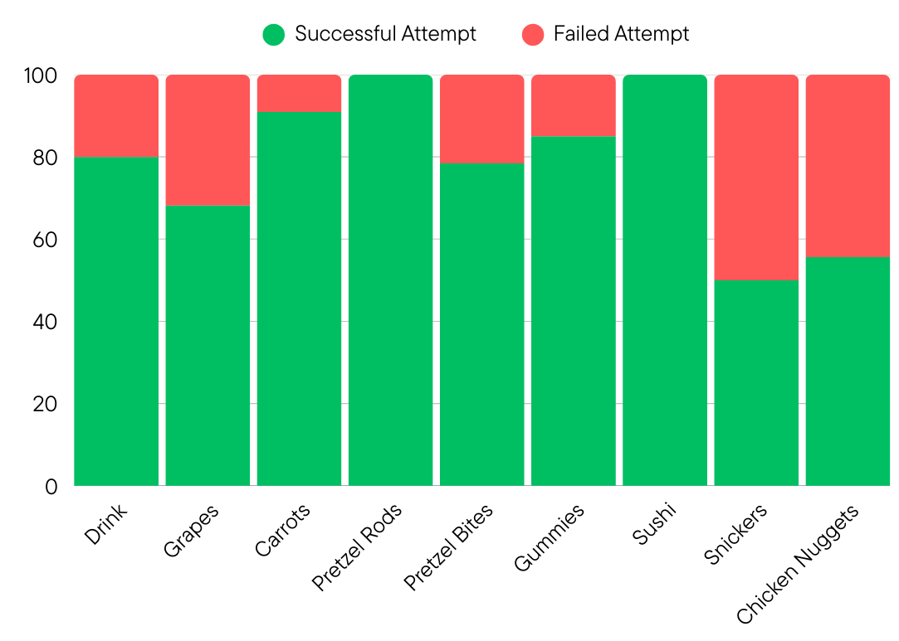
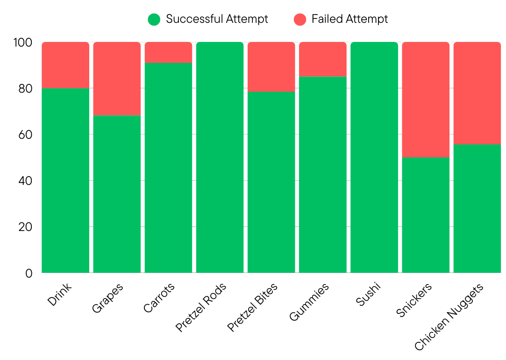

Success Rate
Success and Failure Rates of feeding on different finger foods
A robotic feeding system for finger foods for individuals with spinal cord injuries. Our system integrates zero-shot object detection model, it uses Vision Language Model to recognize different food items and leverage large language models to personalize the feeding preferences.
The platform is equipped with multimodal capabilities to process visual, auditory and proprioceptive inputs in realtime and respond with natural human-like response and execute appropriate low-level robot actions. The system intelligently categorizes food items as single-bite or multi-bite to determine the most optimal grasp points. The robot also offers drink assistance using a straw-delivery approach. For safe and comfortable bite transfer, our solution implements dynamic positioning that adapts to the user’s height and facial orientation, using visual servoing with lip detection to ensure food is delivered only when the user’s mouth is open.
Additionally, we also provide a calibration method as an alternative to visual servoing, where the robot is set to admittance mode and manually moved to the user’s desired bite transfer pose. User studies with seven participants, including one with spinal cord injury, demonstrate excellent usability with SUS scores of 70 and NASA-TLX scores of 17, significantly outperforming the baseline average of 37±11.

Success and Failure Rates of feeding on different finger foods
NASA TLX and System Usability Score